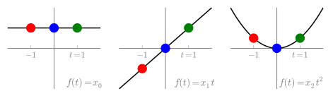

Compressive Sensing Primer
Table of contents:
(Keyboard shortcuts and tips)
* *Esc*: Close/open slides window.
* *Left/right*: Navigate slides.
* *Up/down*: Scroll main page.
* *Return*: Go to corresponding section in main page.
* Links navigate between slides and main page.
* Drag window anywhere on page.
(284)
===Introduction===

* Samples at $t=-1,0,1$.
* Impossible to distinguish signals with fewer than 3 samples.
* How can we fix this?
(285)
=== Counter Example ===
(Slide 1 of 4)
* Express sparsity basis in Lagrange coordinates.
* $1 \leftrightarrow \begin{bmatrix}\color{red}{1} \\
\color{blue}{1}\\ \color{green}{1}\end{bmatrix}$
* $t \leftrightarrow \begin{bmatrix}\color{red}{-1} \\
\color{blue}{0}\\ \color{green}{1}\end{bmatrix}$
* $t^2 \leftrightarrow \begin{bmatrix}\color{red}{1} \\
\color{blue}{0}\\ \color{green}{1}\end{bmatrix}$
(361)
===Counter Example===
(Slide 2 of 4)
* Project along $b_1^\ell$
* $1 \leftrightarrow \begin{bmatrix}\color{red}{1} \\
\cancel{\color{blue}{1}}\\ \color{green}{1}\end{bmatrix}$
* $t \leftrightarrow \begin{bmatrix}\color{red}{-1} \\
\cancel{\color{blue}{0}}\\ \color{green}{1}\end{bmatrix}$
* $t^2 \leftrightarrow \begin{bmatrix}\color{red}{1} \\
\cancel{\color{blue}{0}}\\ \color{green}{1}\end{bmatrix}$
* $\color{blue}{\mathcal{SB}\mathrm{-projections}}$ are not distinct
(342)
===Counter Example===
(Slide 3 of 4)
* Project along $b_0^\ell$
* $\color{red}{\mathcal{SB}\mathrm{-projections}}$ are not distinct
(341)
===Counter Example===
(Slide 4 of 4)
* Project along $b_2^\ell$
* $\color{green}{\mathcal{SB}\mathrm{-projections}}$ are not distinct
(304)
=== Remedy ===
(Slide 1 of 2)
* CS fails in *all* sensing coordinate planes ...
* Find new coordinate planes!
(311)
===Remedy===
(Slide 2 of 2)
* Orientate along new coordinates
* new, *distinct* $\mathcal{SB}$-projections
(312)
===Change of Basis===
* Know coordinates of signal $f(t)$ according to sparsity
$\color{magenta}{\mathrm{basis}}$
$$
f(t)=x_0
\color{magenta}{1}+x_1
\color{magenta}{t} + x_2
\color{magenta}{t^2}
$$
* Know coordinates of sparsity basis according to Lagrange basis
($\color{red}{\mathrm{red}}$,
$\color{blue}{\mathrm{blue}}$,
$\color{green}{\mathrm{green}}$
sampling instants)
$$
\begin{align}
\color{magenta}{1} &\longleftrightarrow
[\color{red}{1}~\color{blue}{1}~\color{green}{1}]^T \nonumber \\
\color{magenta}{t} &\longleftrightarrow
[\color{red}{-1}~\color{blue}{0}~\color{green}{1}]^T \nonumber \\
\color{magenta}{t^2} &\longleftrightarrow
[\color{red}{1}~\color{blue}{0}~\color{green}{1}]^T \nonumber
\end{align}
$$
* Therefore know coordinates, $b$, of $f(t)$ according to Lagrange basis
* Bookkeeping via COB matrix
$$
\begin{bmatrix}
\color{red}{1} & \color{red}{-1} & \color{red}{1} \\
\color{blue}{1} & \color{blue}{0} & \color{blue}{0} \\
\color{green}{1} & \color{green}{1} & \color{green}{1}
\end{bmatrix} x =
\begin{bmatrix}
f(\color{red}{t_0})\\
f(\color{blue}{t_1})\\
f(\color{green}{t_2})
\end{bmatrix}=b
$$
(334)
=== CS Equation Revisited ===
* COB equation
$\begin{bmatrix}
\color{red}{1} & \color{red}{-1} & \color{red}{1} \\
\color{blue}{1} & \color{blue}{0} & \color{blue}{0} \\
\color{green}{1} & \color{green}{1} & \color{green}{1}
\end{bmatrix} x=b^\ell$
* $\mathcal{SB}$-projections $\rightarrow$
$\require{cancel}
\begin{bmatrix}
\color{red}{1} & \color{red}{-1} & \color{red}{1} \\
\cancel{\color{blue}{1}} & \cancel{\color{blue}{0}}
& \cancel{\color{blue}{0}} \\
\color{green}{1} & \color{green}{1} & \color{green}{1}
\end{bmatrix}
$
* $Ax=b$ (e.g.,)
$
\require{cancel}
\begin{bmatrix}
\color{red}{1} & \color{red}{-1} & \color{red}{1} \\
\cancel{\color{blue}{1}} & \cancel{\color{blue}{0}}
& \cancel{\color{blue}{0}} \\
\color{green}{1} & \color{green}{1} & \color{green}{1}
\end{bmatrix} x=
\begin{bmatrix}1\\\cancel{0}\\1 \end{bmatrix}
$
* (No unique solution in this case.)
(286)
===Remedy Revisited===
* Core problem:
$\require{cancel}
\begin{bmatrix}
\color{blue}{1}&\color{blue}{-1}&\color{blue}{1}\\
\cancel{1}&\cancel{0}&\cancel{0}\\
\color{blue}{1}&\color{blue}{1}&\color{blue}{1}
\end{bmatrix} x=
\begin{bmatrix}
1\\ \cancel{0} \\ 1
\end{bmatrix}
$
has two 1-sparse solutions.
* That is, there are 1-sparse aliases.
* Because two $\mathcal{SB}$-projections (columns) are not distinct.
* Alternatively, because spark = 2 (combination of 2 columns adds to zero)
* Remedy = COB
$$
\begin{bmatrix}
\color{magenta}{\cancel{\cos\theta}}&
\color{magenta}{\cancel{-\sin\theta}}&
\color{magenta}{\cancel{0}}\\
\color{magenta}{\sin\theta}&
\color{magenta}{\cos\theta}&
\color{magenta}{0}\\
\color{magenta}{0}&
\color{magenta}{0}&
\color{magenta}{1}
\end{bmatrix}
\begin{bmatrix}
\color{blue}{1}&\color{blue}{-1}&\color{blue}{1}\\
1&0&0\\
\color{blue}{1}&\color{blue}{1}&\color{blue}{1}
\end{bmatrix}
x
=
\begin{bmatrix}
\color{magenta}{\cancel{\cos\theta}}&
\color{magenta}{\cancel{-\sin\theta}}&
\color{magenta}{\cancel{0}}\\
\color{magenta}{\sin\theta}&
\color{magenta}{\cos\theta}&
\color{magenta}{0}\\
\color{magenta}{0}&
\color{magenta}{0}&
\color{magenta}{1}
\end{bmatrix}
\begin{bmatrix}
1\\ 0 \\ 1
\end{bmatrix}
$$
* Now: No 1-sparse aliases; $\mathcal{SB}$-projections distinct; spark = 3.
(287)
===DFT===
$$g_n = \frac{1}{N} \sum_{k=0}^{N-1} G_k \cdot e^{(i 2 \pi n / N)k}$$
* One signal
* Two sets of coordinates:
** "time domain" sample values (Lagrange coordinates)
** "frequency domain" spectrum (sparse coordinates)
* Coordinates related by DFT matrix (or inverse)
* DFT matrix is a COB matrix
(354)
=== Mutual coherence and noise ===
* *Do not express one thing in terms of other similar things*
* E.g., if columns of $A$ ($\mathcal{SB}$-projections) are similar:
$$
Ax=
\begin{bmatrix}
\cdots & 1.01 & 0.99 & \cdots \\ \cdots & 1 & 1 & \cdots
\end{bmatrix}x =
\begin{bmatrix}\color{blue}{2}\\ \color{blue}{2}\end{bmatrix}
$$
$\hspace{2em}$ has sparse solution
$x=
\begin{bmatrix}
0 &
\cdots & 0 &
\color{blue}{1} &
\color{blue}{1} &
0 &
\cdots &
0
\end{bmatrix}^T$
* *But*
$$
Ax=
\begin{bmatrix}
\cdots & 1.01 & 0.99 & \cdots \\ \cdots & 1 & 1 & \cdots
\end{bmatrix}x =
\begin{bmatrix}
\color{red}{2.1}\\
\color{red}{1.9}
\end{bmatrix}
$$
$\hspace{2em}$ has sparse solution
$\hspace{3em}x=\begin{bmatrix}
0 &
\cdots &
0 &
\color{red}{10.95} &
\color{red}{-9.05} &
0 &
\cdots &
0
\end{bmatrix}^T$
* The solution is not *robust* to noise.
(289)
===Scale and randomness===
* CS $\longleftrightarrow$ COB
* How can we choose good bases for large problems?
* Randomly!
(293)
===Examples===
(Slide 1 of 3)
* Nonuniform sampler
* Random Demodulator
(359)
===Examples: Nonuniform Sampler===
(Slide 2 of 3)
* Random sampling of radio-frequency (RF) waveforms
* Analog sample-and-hold
* Convert randomly held values to digital
* CS matrix equivalent to DFT matrix with randomly chosen rows
(294)
===Examples: Random Demodulator===
(Slide 3 of 3)
* Similar to CDMA receiver
** "despread" with pseudo-noise (PN) sequence
** "cover" with Walsh codes
* CS matrix is product of COB matrices, starting with DFT.
(360)
===Conclusion===
* Bridge to CS technical literature
* Foundation is change of basis (COB)
* Sparsity in one basis
* Redundancy in another
* Applications can be succinctly represented in COB form
* As ever, noise and robustness must be considered
(355)
===References===
1. Michael Wakin, Stephen Becker, Eric Nakamura, Michael Grant,
Emilio Sovero, Daniel Ching, Juhwan Yoo, Justin Romberg,
Azita Emami-Neyestanak, and Emmanuel Candès,
"[http://ieeexplore.ieee.org/stamp/stamp.jsp?tp=&arnumber=6316045&isnumber=6374660,
A Nonuniform Sampler for Wideband Spectrally-Sparse Environments,]"
IEEE Journal on Emerging and Selected Topics in Circuits and Systems,
vol.2, no.3, pp.516-529, Sept. 2012.
1. Tropp, J.A., Laska, J.N., Duarte, M.F.,
Romberg, J.K., Baraniuk, R.G.,
"[http://ieeexplore.ieee.org/stamp/stamp.jsp?tp=&arnumber=5361485&isnumber=5361455
,Beyond Nyquist: Efficient Sampling of Sparse Bandlimited Signals],"
IEEE Transactions on Information Theory, vol.56, no.1, pp.520-544,
Jan. 2010.
(297)